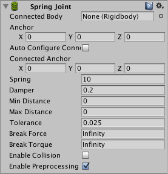

Spring Joint
The Spring Joint joins two Rigidbodies together but allows the distance between them to change as though they were connected by a spring.

Properties
| Property: | Function: |
|---|---|
| Connected Body | The Rigidbody object that the object with the spring joint is connected to. If no object is assigned then the spring will be connected to a fixed point in space. |
| Anchor | The point in the object's local space at which the joint is attached. |
| Auto Configure Connected Anchor | Should Unity calculate the position of the connected anchor point automatically? |
| Connected Anchor | The point in the connected object's local space at which the joint is attached. |
| Spring | Strength of the spring. |
| Damper | Amount that the spring is reduced when active. |
| Min Distance | Lower limit of the distance range over which the spring will not apply any force. |
| Max Distance | Upper limit of the distance range over which the spring will not apply any force. |
| Tolerance | Changes error tolerance. Allows the spring to have a different rest length. |
| Break Force | The force that needs to be applied for this joint to break. |
| Break Torque | The torque that needs to be applied for this joint to break. |
| Enable Collision | Should the two connected objects register collisions with each other? |
| Enable Preprocessing | Disabling preprocessing helps to stabilize impossible-to-fulfil configurations. |
Details
The spring acts like a piece of elastic that tries to pull the two anchor points together to the exact same position. The strength of the pull is proportional to the current distance between the points with the force per unit of distance set by the Spring property. To prevent the spring from oscillating endlessly you can set a Damper value that reduces the spring force in proportion to the relative speed between the two objects. The higher the value, the more quickly the oscillation will die down.
You can set the anchor points manually but if you enable Auto Configure Connected Anchor, Unity will set the connected anchor so as to maintain the initial distance between them (ie, the distance you set in the scene view while positioning the objects).
The Min Distance and Max Distance values allow you to set a distance range over which the spring will not apply any force. You could use this, for example, to allow the objects a small amount of independent movement but then pull them together when the distance between them gets too great.